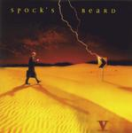

Home Artist links Label link

| Artist: | Spock's Beard |
| Title: | V |
| Label: | Inside Out IOMCD063 |
| Length(s): | 63 minutes |
| Year(s) of release: | 2000 |
| Month of review: | 08/2000 |
Line up
Neal Morse - vocals, piano, synths, guitars
Alan Morse - electric guitar, cello, mellotron, vocals
Dave Meros - bass, vocals
Ryo Okumoto - hammond, mellotron
Nick D'Virgilio - drums, percussion, vocals
(I guess nothing changed, but to be honest this comes from Kindness of
Strangers. Again, no booklet.)
Tracks
| 1) | At The End Of The Day | 16.28
|
| 2) | Revelation | 6.05
|
| 3) | Thoughts (part II) | 4.39
|
| 4) | All On A Sunday | 4.04
|
| 5) | Goodbye To Yesterday | 4.39
|
| 6) | The Great Nothing | 27.01
|
| | I: From Nowhere |
|
| | II: One Note |
|
| | III: Come Up Breathing |
|
| | IV: Submerged |
|
| | V: Missed Your Calling |
|
| | VI: The Great Nothing |
|
Summary
This band has the tendency to surprise me with the abruptness of the
releasing of a new record.
The music
Two major tracks enclose four smaller ones, which means we open now with
a major epic (sixteen and a half minute). At The End Of The Day opens
untypically orchestral for Spock's Beard. The follow-up is typical for
SB however with an optimistic melody and some nice rolling drums played
as always by D'Virgillio. Ryo is allowed plenty of space since this first
part brims with organ playing. Then the somewhat melancholy wind orchestra
returns (I'm not sure whether it is synthetic or not, but I have the impression
it is). Acoustic guitars then (remember mister Velasco?) giving the music
a Latin tinge. Some jazzy keyboards prelude a bombastic trumpet passage.
The guitar is rarely used as a solo instrument, but it does add some of
the darker and chaotic overtones to the music. If I'd have to point out
references, then I have to admit only being able to refer to Spock's Beard
(although I'm reminded of Kansas sometimes, but only because of the feel
the music sometimes has). The sweet harmonies in the middle are really sweet
and have need of an "antidote", which is the grungy guitar and ELPish keyboard
solo right afterwards. This song to me stands out above the previous
Day For Night head and shoulders.
Revelation opens by taking gas back, a dreamy opening, but to be alternated
with a thunderous chorus. The music has a jazzy feel in the softer passages
with cosmic sounds added. The rougher parts have that upliftingness typical
of much of Spock's Beards music (when it works, that is, and it does so here).
The end is a slow plodding piece of work with powerful guitar chords,
dragging along slowly, but unstoppably.
Thoughts (part II) is a sort of sequel to Thoughts from Beware Of Darkness,
so we better get used to being tied in Knots again. The music owes of course
to the quirkiness of Gentle Giant with playful piano and the Giantish
harmonies, but actually all the ingredients of SB come along one way or
another.
All On A Sunday has bubbly vocals on a backdrop of rather relaxed organ
playing. The song has a very catchy chorus and the drumming is quite off-beat.
Still, a very catchy track that might make it to single. The only candidate
so far.
Goodbye To Yesterday is the last of the shorties. Opening with acoustic
guitar, this is a melancholy track with often hazy vocals. The second verse
is more up-beat, but only because it is supported by percussion.
The Great Nothing takes up 27 minutes of the album and is to be divided
into six parts (this is something they did not do on the previous album and
it seemed that because of this proggers liked the album a lot less).
From Nowhere sounds as the bombastic opening to an SF series, but we return
to Earth quickly with the acoustic guitar that follows it. Cello and bass
and later guitar make the music take a turn for the menacing.
After a rather familiar sounding transition we come to a piano passage and
as I came to expect we come now to the vocal part. An thematic opening
with nicely melodic piano playing and clear vocals on a good vocal melody.
With the acoustic guitar (passing by Crosby Stills and Nash (and Young if
you really want to)) we come to the third part Come Up Breathing.
Typical SB keyboard playing here, moving into a weird intermezzo that has
some of the musical aspects of what has gone before in it. We emerge with
an organ solo, the music being more of a jazzy jam right now. This shouldn't
take too long (it maybe does so a little).
I wonder whether Missed Your Calling being the part V should be regarded
as the title track. This is raunchy rock track, energetic and somewhat
quirky at times.
The continuation lets mauch of what has gone before in this track recur
making it into a wild and sometimes scary ending to this track of epic
proportions.
Conclusion
After the to me disappointing Day For Night (it seems to me too little time
was taken to let it crystallize), the band returns with a superior follow up
in the form of V. Two major epics enclosing a number of shorter tracks and
I have to admit liking every single one of them. Can't do much else than
recommending this one. The music is recognizably SB, and many of the sounds
and effects will sound familier, but has some "new" features as well such
as the orchestral fooling around in the first track.
© Jurriaan Hage